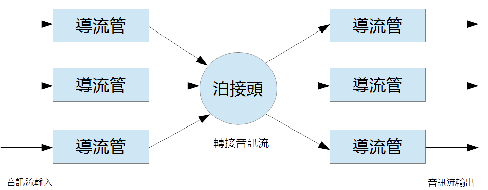

导流管的继承处理
「导流管」（Conduit）是CIOS「集智作业系统」当中的重要观念，「集智作业系统」的运作主体是「知识」，「知识设 计」与「知识运算」是「集智作业系统」的最主要操作及功能。作为感知与互动系统的一部分，「CIOS音讯核心」必须经常性地 「自主性泊接」，方便选择性地接收知识或是传达讯息。《Conduit/Junction》是「集智作业系统」当中处理知识信息流的最主要方式，当中「CIOS音讯核心」的出入 口，即为「导流管」（Conduit）。「导流管」观念也是CIOS Audio Core与其他音讯处理介面最大不同之处，在示范程序当中，我们也使用了少量的「集智作业系统」的《Conduit/Junction》来示范「导流管」 的各层面应用。「雅典娜输入法」的语音辨识及语音输出，即使用这种方法实现的。
「导流管」对外还可以泊接许多不同功能的《Conduit/Junction》，例如，TTS、语音辨识及音乐仓库输出等 等。使用「导流管」（Conduit）与「泊接」（Junction）的方法，可以使得音讯设备的应用十分地灵活。
一般的开发使用者，通常都只需要实作自己的「导流管」，将音讯从音讯设备接收进来或是输出到音讯设备，因此，这个部分我们将 详细解释各种应用方法。
导流管的定义

就最简单的观点来说，导流管只有一个资料流输入及一个资料流输出。就「CIOS音讯核心」系统当中，「资料流输入」接到「音 讯驱动介面」时，即为「录音」，「资料流输出」接到「音讯驱动介面」时，即为「播放」。
泊接头的定义

「泊接头」的作用是将所有类型的「导流管」泊接在一起，进行数据交换。使用「泊接头」的方法，可以轻鬆达成比Jack Audio更强大的音讯转换功能。
使用「导流管」与「泊接头」是集智作业系统的主要知识处理方式。
「导流管」类别
「CIOS音讯核心」的「导流管」类别，宣告如下，开发者必须继承其中三个函式（obtain, put, finish）：
class Conduit
{
public:
typedef enum CallBackResult {
Continue = 0 ,
Complete = 1 ,
Abort = 2 ,
Postpone = 3 }
CallBackResult ;
typedef enum ConduitDirection {
NoDirection = 0 ,
InputDirection = 1 ,
OutputDirection = 2 }
ConduitDirection ;
typedef enum FinishCondition {
Correct = 0 ,
Abortion = 1 ,
Interruption = 2 ,
Accident = 3 }
FinishCondition ;
StreamIO Input ;
StreamIO Output ;
CacInputFunction inputFunction ;
CacOutputFunction outputFunction ;
explicit Conduit (void) ;
virtual ~Conduit (void) ;
virtual int obtain (void) = 0 ;
virtual int put (void) = 0 ;
virtual void finish (ConduitDirection direction = NoDirection ,
FinishCondition condition = Correct ) = 0 ;
virtual void LockConduit (void) ;
virtual void UnlockConduit (void) ;
protected:
virtual int ObtainByFunction (void) ;
virtual int PutByFunction (void) ;
};
接收音讯流
我们使用LinearConduit来解释如何接收音讯流。class LinearConduit : public Conduit
{
public:
explicit LinearConduit (void) ;
LinearConduit (int size) ;
virtual ~LinearConduit (void) ;
virtual int obtain (void) ;
virtual int put (void) ;
virtual void finish (ConduitDirection direction = NoDirection ,
FinishCondition condition = Correct ) ;
virtual int setBufferSize (int size) ;
virtual int size (void) const ;
virtual unsigned char * window (void) const ;
protected:
unsigned char * buffer ;
int Size ;
virtual int LinearPut (void) ;
};
LinearConduit实际上仅继承了put及finish函式，obtain函式直接返回了Complete，put 函式当中直接呼叫了LinearPut函式：
int LinearConduit::LinearPut(void)
{
if ( Input . isNull ( ) ) return Abort ;
long long bs = Input.Total() ;
if ( bs <= 0 ) return Continue ;
if ( bs > Size ) bs = Size ;
int dp = Size - bs ;
if ( dp > 0 ) {
::memcpy ( buffer , buffer + bs , dp ) ;
} ;
::memcpy ( buffer + dp , Input . Buffer , bs ) ;
return Continue ;
}
LinearConduit使用一个记忆体区块，新增的音讯流不断地从记忆体区块的后端新增，并且将前面的记忆体向前搬动，维持整个记忆 体区块大小一致。一般而言，LinearConduit用于FFT或是语音辨识当中的语音活动侦测（Voice Activity Detection）。
如果您想要使用FFT将语音转换到频率领域，一般而言，LinearConduit的缓冲区时间都是设定为一秒，也就是与取 样率相同。
在LinearConduit函式当中，我们可以看到，我们将Input.Buffer的内容往自己的记忆体区块搬动，总数 量由Input.Total()这个函式来决定，Input.Total()的值是( BytesPerSample * FrameCount ) ，这个数值并不保证是固定的数值。
当我们需要使用LinearConduit的音讯内容时，只要用下列函式即可：
LinearConduit.window()
如果您想要将音讯波形显示，可以参考示范程序：CiosAudio/Examples/Qt/CaWaveFreqFFT
供应音讯流
我们使用BridgeConduit来解释如何供应音讯流。class BridgeConduit : public Conduit
{
public:
LoopBuffer Buffer ;
explicit BridgeConduit (void) ;
virtual ~BridgeConduit (void) ;
virtual void setBufferSize (int size,int margin) ;
virtual int obtain (void) ;
virtual int put (void) ;
virtual void finish (ConduitDirection direction = NoDirection ,
FinishCondition condition = Correct ) ;
virtual void LockConduit (void) ;
virtual void UnlockConduit (void) ;
protected:
Mutex mutex ;
int BridgeObtain (void) ;
int BridgePut (void) ;
};
CaPlay示范程序当中的MediaPlay函式，实际上是使用BridgeConduit来做为音讯转接的作用，其中 obtain实际呼叫了BridgeObtain函式：
int BridgeConduit::BridgeObtain(void)
{
if ( Input . Situation == StreamIO::Stagnated ) {
return Continue ;
} ;
//////////////////////////////////////////////////
if ( Output . FrameCount <= 0 ) {
Output . Situation = StreamIO::Ruptured ;
return Complete ;
} ;
//////////////////////////////////////////////////
if ( Output . isNull ( ) ) {
Output . Situation = StreamIO::Ruptured ;
return Complete ;
} ;
if ( ( Buffer . isEmpty ( ) ) &&
( StreamIO::Started == Output.Situation) ) {
Output . Situation = StreamIO::Completed ;
return Complete ;
} ;
//////////////////////////////////////////////////
int bs = Output . Total ( ) ;
Buffer . get ( Output . Buffer , bs ) ;
Output . Situation = StreamIO::Started ;
return Continue ;
}
当您需要供应音讯时，将音讯複製到Output.Buffer当中即可，总数量是由Output.Total()来决定，这 个数值并不保证是固定的数值。